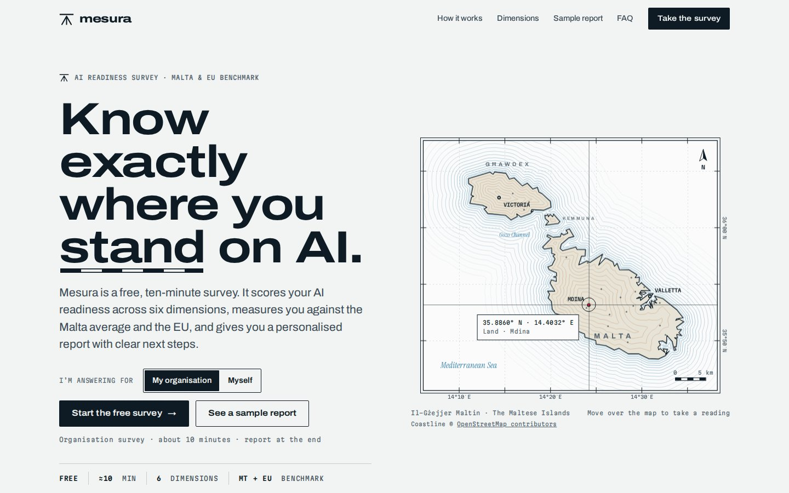
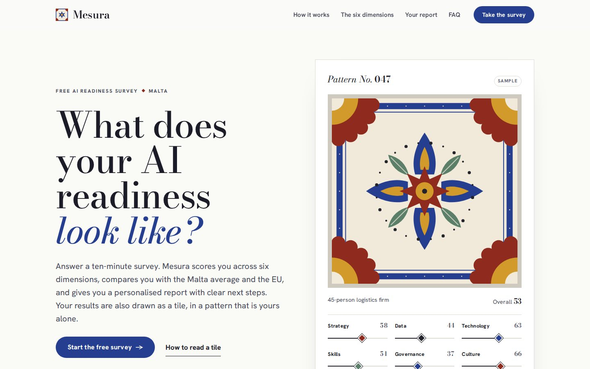
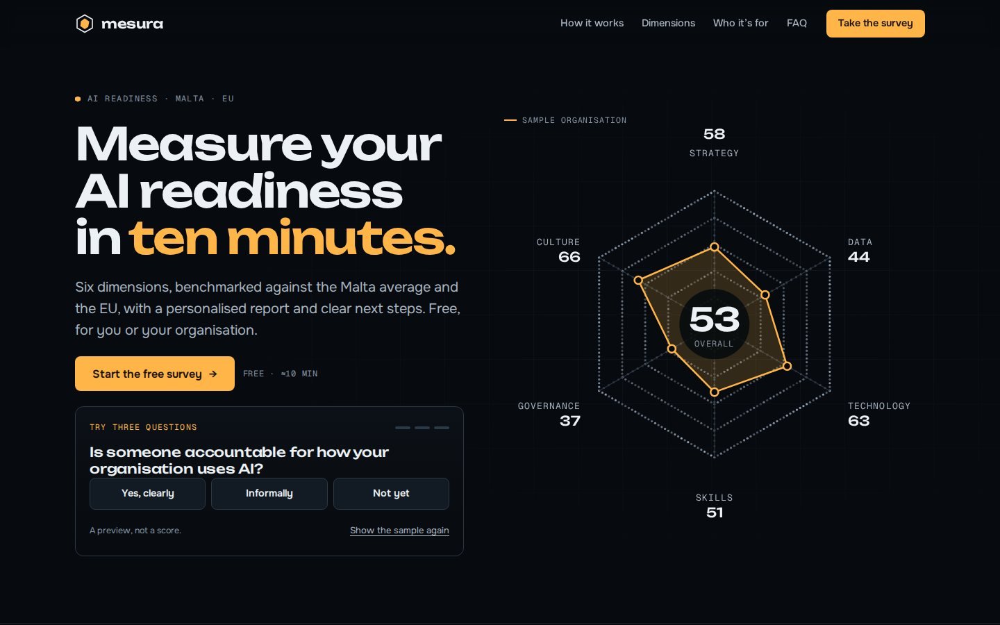
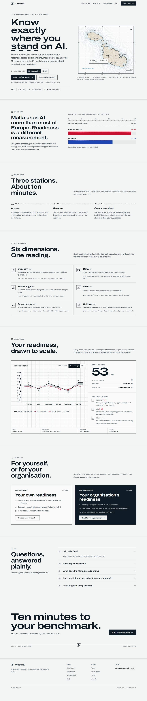
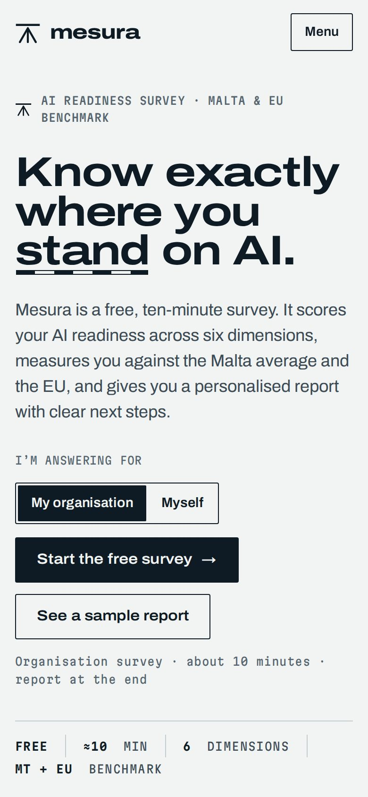
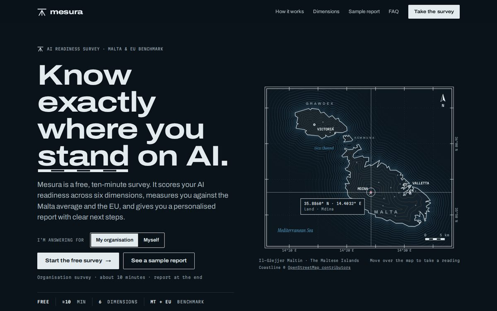
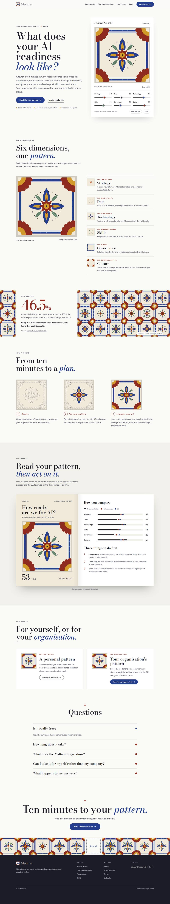
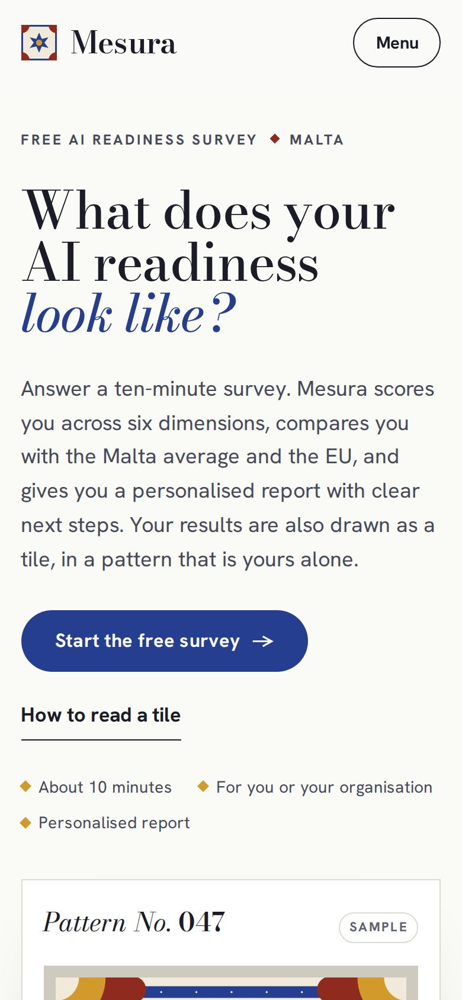
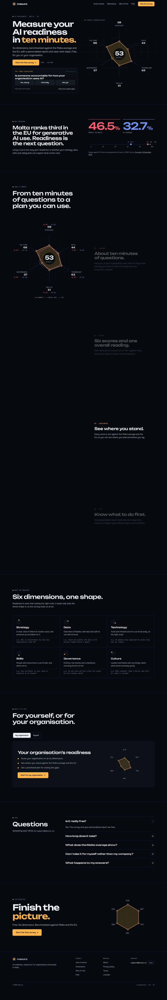
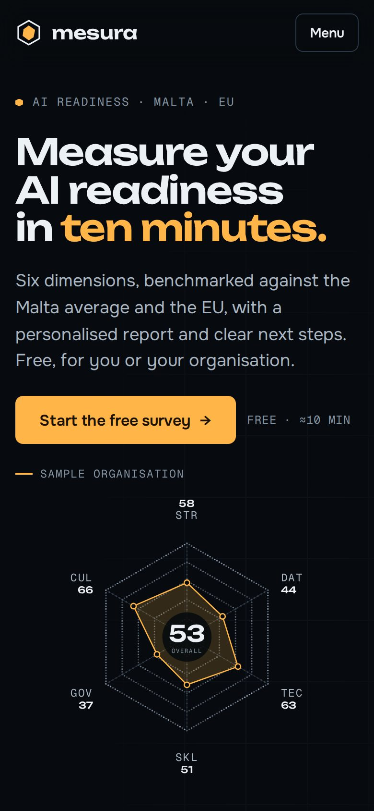

A homepage redesign for Mesura, the free AI readiness survey. Each route is a working, responsive prototype built on the same content, so the comparison is about the idea rather than the copy.

ADatumPrecise, institutional
BMadumWarm, local, collectable
CSixProduct-led, energeticWhat this is built from. The live mesura.ai site was blocked from the environment these were built in, so the work starts from Mesura’s public description: a free, ten-minute survey that scores six dimensions against the Malta average and the EU, with a personalised report and clear next steps, for individuals or organisations. Everything I could not confirm is listed under Open questions.
One conversion matters: starting the ten-minute survey. Everything on the page either makes that feel worth it or makes it easier.
Job 1
Free, about ten minutes, six dimensions, measured against Malta and the EU, with a report at the end. Every route says all of it above the fold.
Job 2
Show the report itself instead of describing it, cite real data with sources, and write plainly. A benchmark is only as good as it looks.
Job 3
Individuals and organisations take the same six dimensions against the same benchmarks. They choose who they’re answering for up front, and the page keeps one path.
The insight every route leads with
46.5%
Nearly half of people in Malta used generative AI tools in 2025. Usage is high. Readiness is unmeasured, and that gap is Mesura’s reason to exist.
Each route uses this contrast as its “why measure” moment, then turns it into the product promise: know where you stand, then know what to do next.
People aged 16–74. Source: Eurostat news release, 16 December 2025.
“Benchmark” began as a surveyor’s mark cut into stone: the fixed point you measure from. Datum treats Mesura as a precision instrument.

Hover to scroll the page
The Maltese Islands drawn as a survey sheet, and every score plotted like a level against two datum lines: the Malta average and the EU.
A live map built from real coastline data: move over it for true coordinates and distances. In the sample report, gaps are hatched like cut-and-fill and redraw when you switch benchmark.
Archivo, expanded for display. Martian Mono readouts. Instrument Serif italic for water, as on real maps. Ink on survey paper; red and blue only ever mean Malta and the EU.
You want to be the credible, institutional reference for policy, finance and the public sector. Watch-out: the charm is in the details, so it rewards careful build.

Datum ships with a dark “night survey” theme that follows the visitor’s system setting.
Malta’s cement tiles, the madum in almost every older home, become a data visualisation. Six scores draw six layers, so every result is a pattern of its own.

Hover to scroll the page
Strategy draws the centre star, data the ring of dots, technology the petals, skills the leaves, governance the border and culture the corner rosettes.
A tile generator in the hero: drag any score and the tile redraws. Corner rosettes join neighbouring tiles, so a floor of results becomes a picture of readiness across Malta.
Bodoni Moda, in the tradition of the tile-maker’s pattern book, with Hanken Grotesk. Cobalt, oxblood, ochre and sage on bone; oxblood marks Malta and cobalt the EU.
You want warmth, local pride and something people share: the tile is a ready-made LinkedIn post and report cover. Watch-out: it’s a product feature, not just a homepage.
The product is the hero. Six dimensions make a hexagon, and the whole page is built around it: a dark stage, a live shape and a scroll story that assembles a report.

Hover to scroll the page
Dots gather into the hexagon’s rings as the page loads. Then the scroll story moves from answers to scores, to Malta and EU benchmarks, to next steps.
Three quick questions in the hero sketch your shape in real time, leaving three sides as question marks. It’s a preview, never a score, and it pulls people into the full survey.
Unbounded for display, Onest for text, Geist Mono for data. A near-black stage where amber is you, red is Malta and blue is the EU.
Conversion comes first and you want a product-led, tech-forward feel for start-ups, fintech and iGaming. Watch-out: heaviest to build, and the taste has to hand answers to the real survey.
All three are buildable on the current offer. The difference is how much each asks of the product behind the page.
| Route | Feels like | Hero does | Product asks | Build effort |
|---|---|---|---|---|
| Datum | Precise, institutional, calm | Survey map with live readings | None beyond the report | Medium |
| Madum | Warm, local, collectable | Tile you can redraw | Tile generated from each result | Medium to high |
| Six | Product-led, energetic | Three questions sketch your shape | Carry quick answers into the survey | High |
Whichever route goes forward, these decisions come with it.
Hero, why measure, how it works, the six dimensions, a sample report, two audiences, FAQ and a final call. Same order, same copy in every route.
Across every chart, one colour is always you, red is always Malta and blue is always the EU, taken from the two flags.
Real buttons and links, keyboard-operable charts with data tables behind them, checked contrast, reduced-motion support, and typefaces tested for ħ, ġ, ż and ċ.
Plain HTML, CSS and JavaScript. No frameworks and no tracking; the only outside requests are web fonts.
Assumptions I made to get to working prototypes. Each one is quick to swap once confirmed.
Open any prototype; the bar at the bottom switches routes and returns here. Worth trying:
Each one works on a phone too.